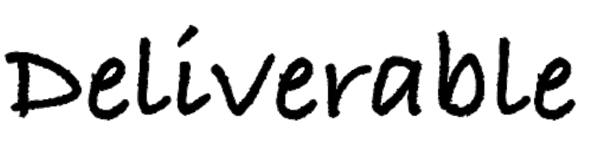
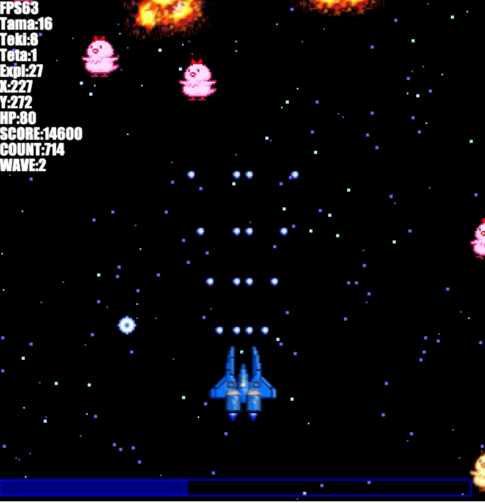
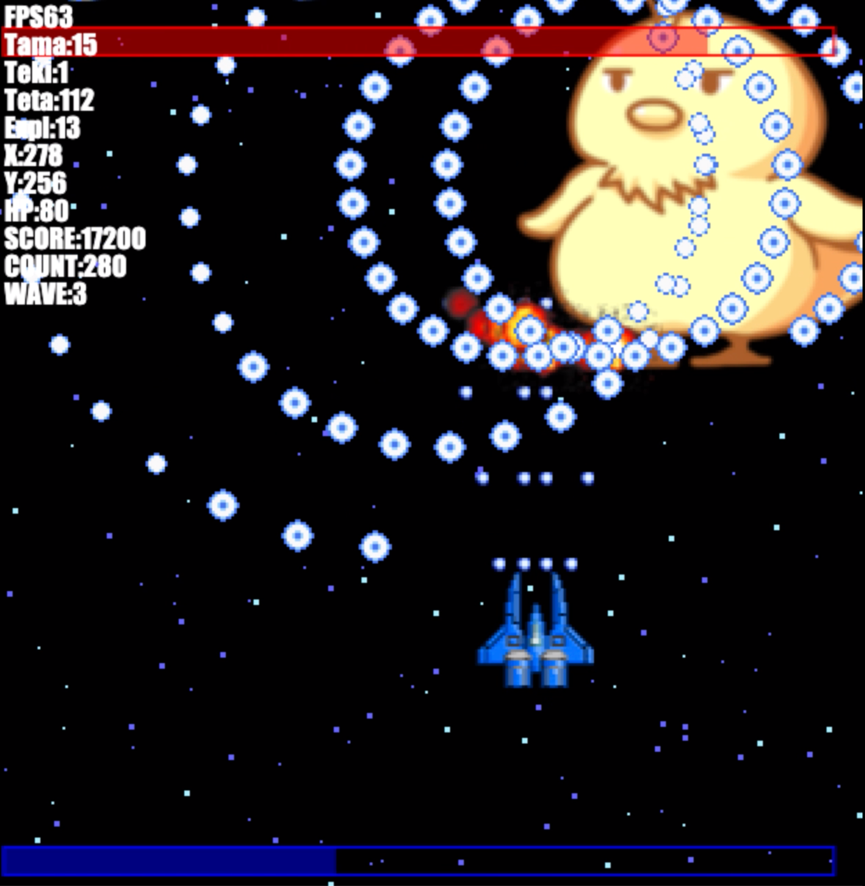
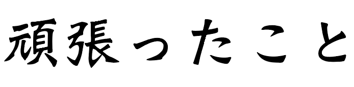

Portfolio
profile
| projectN
| deliverables
| 頑張ったこと
| 二年生に向けて
profile
| 名前 |
今井悠太 |
| 年齢 |
高校一年生 |
| 所属 |
御茶ノ水キャンパス |
| プロジェクトNで得た能力・技術 |
・発想能力・プレゼン力・技術力 |
| 自己アピール
（自分の強みや優位点など）
|
adobe少し使える！ html、js、cssが少し使える！ |

ここでは一年間で作った成果物を紹介します！
まずはN予備校で作ったものから
診断メーカー名前を入れたらランダムで結果を出すおもしろ診断です！ 結果はそのままtweetすることも可能です。
| 使った教材 — |
プログラミング入門第1章 |
| 使った技術 — |
html,JS,css |
N予備校のプログラミング入門Webアプリ第1章の最後に作りました。パソコンを触り始めて少ししか経ってないときに作ったので完成した時は感動しました
CSSを使った水族館サイト水族館をテーマにした公式サイトを作りました！
| 使った教材 — |
Webデザイン HTML・CSSデザイン |
| 使った技術 — |
html,css |
この教材ではサイトの形、formの作り方、CSSの基本を学びました！
3Dを使ったwebページ立体的なキューブとニコニコテレビちゃんです！
| 使った教材 — |
プログラミング入門第3章 |
| 使った技術 — |
html,JS,css,Blender |
この教材ではthree.jsをはじめとしたJSに間することやBlenderの使い方を学びました！
Unityを触ってみたキャラクターを動かせる迷路
| 使った教材 — |
ゲームプログラミング 2019年度版 |
| 使った技術 — |
Unity |
この教材ではUnityを触ってみました！
本やWeb上の教材を参考にして作成
シューティングゲーム敵キャラがひよこのシューティングゲームです！
| 使った教材 — |
YouTube |
| 使った技術 — |
html,JS |
 
YouTubeでたまたま見つけたプログラミング講座。思ったより全然レベルが高かったですがとてもわかりやすく動画に出てくる人がコードを打つのを追っていたら完成してました。
誰でも作れるので
こちらからどうぞ！
ものずくりはじめましたオンライン書き初めをしよう！
| 使った教材 — |
ものずくりはじめました |
| 使った技術 — |
html,JS,CSS |
ものはじのテーマがhtmlになったと聞いて興味が湧きテキストをやりましたが、30分程度で終わってしまい物足りなさを感じて色々改良して提出したら優秀作品に選ばれました！
アドバイスやフィードバックをしてくれた先生、TAさんたちのおかげです！
動画編集昔流行ったto be continuedを使ったくだらない動画です
| 使った教材 — |
なし |
| 使った技術 — |
iMovie |
英語の教材の不具合を報告するために撮った動画がいつの間にかto beに変わってました。
動画の効果音、BGM、カット編集など基本を学べたことで色々なプロジェクトに活用できましたし、現在進行形でこのポートフォリオにもたくさん使いました!

ここでは一年の間で頑張ったことを三つ紹介します
1.通学私はめちゃくちゃ学校が嫌いです。なので登校することが嫌でした。ただN高に入るときに親に協力してもらったり、勉強をたくさんする必要があったので一学期の最初に休まないことを目標にしました！その結果一学期、二学期共に皆勤賞を取れました!毎日支えてくれた親や学校を楽しくしてくれた先生、TAさん、友達にはとても感謝しています。
2.オープンキャンパス最初は友達に誘われて嫌々参加してましたが、プログラミングチームと出会うことによって普段体験できないような体験ができ自主的に参加するようになりました！
3.キャンパスフェスティバル軽いノリで参加したキャンフェスの実行委員。いつの間にか友達と二人でお化け屋敷のWフロア長やってました、、、当時はお化け屋敷のチームが一年生のみのチームということで不安しかありませんでしたが、別のフロアのメンバーや実行委員外の友達や先輩の助けもあり余裕でした！
学べたこともたくさんあり、人の動かし方や組織的な動き方、Nスタンダードにもある主体性・挑戦・柔軟性・向上心・寛容さ・心身・継続力・協働・感謝・貫徹などなど、、、 とても多くのことを学べました!
特に問題なく成功できて今後の活動に自身を持って取り組めます！
二年生に向けて
今の自分に足りないこと
1.デザイン力 どんなプロジェクトでも必要になって困っているデザイン力
2.英語力 プログラミングをやってると英語がわからなくて困ることが多い
3.主体性 誰かに言われないと自信がなくて行動できない
4.JavaScript まだ基本中の基本しか学んでないので理解できてないところが多い
一年後の自分
1.デザイン力 デザイン力もあって、それをadobeやJavaScriptなどを使いこなして作品をつくってる。
2.英語力 英検三級以上を取得！
3.自発的に動いている！
4. JavaScriptだけではなくPythonなどの新しい技術を扱っている。